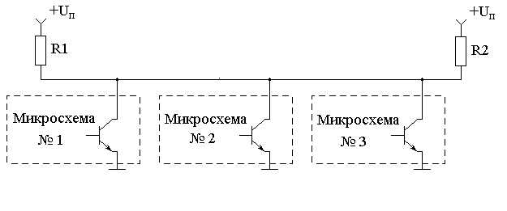
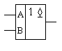
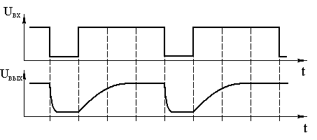
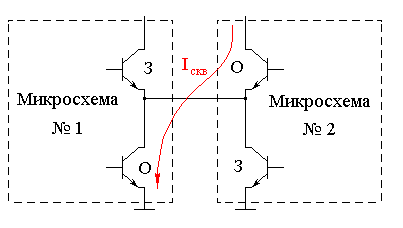
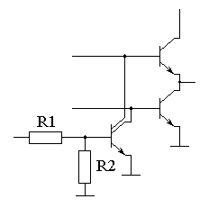
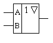
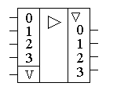

Шинные формирователи
Мультиплексоры предназначены для объединения нескольких выходов в тех случаях, когда заранее известно сколько выходов нужно объединять. Часто это неизвестно. Более того, часто количество объединяемых микросхем изменяется в процессе эксплуатации устройств. Наиболее яркий пример - это компьютеры, в которых в процессе эксплуатации изменяется объем оперативной памяти, количество портов ввода-вывода, количество дисководов. В таких случаях невозможно для объединения нескольких выходов воспользоваться логическим элементом "ИЛИ".
Для объединения нескольких выходов на один вход в случае, когда заранее не известно сколько микросхем нужно объединять, используется два способа:
- монтажное ИЛИ;
- шинные формирователи.
Исторически первой схемой объединения выходов были схемы с открытым коллектором (монтажное "ИЛИ"). Схема монтажного "ИЛИ" приведена на рисунке 1.

Рис. 1 - Схема монтажного "ИЛИ".
Такое объединение микросхем называется шиной и позволяет объединять до 10 микросхем на один провод. Естественно для того, чтобы микросхемы не мешали друг другу только одна из микросхем должна выдавать информацию на общий провод. Остальные микросхемы в этот момент времени должны быть отключены от шины (то есть выходной транзистор должен быть закрыт). Это обеспечивается внешней микросхемой управления не показанной на данном рисунке.
На принципиальных схемах такие элементы обозначаются как показано на рисунке 2.

Рис. 2 - Обозначение микросхемы с открытым коллектором на выходе
Недостатком приведенной схемы объединения нескольких микросхем на один провод является низкая скорость передачи информации, обусловленная затягиванием переднего фронта. Это явление связано с различным сопротивлением заряда и разряда паразитной ёмкости шины. Заряд паразитной ёмкости происходит через сопротивления R1 и R2, которые много больше сопротивления открытого транзистора. Величину этого сопротивления невозможно уменьшить меньше некоторого предела, определяемого напряжением низкого уровня, который определяется в свою очередь допустимым током потребления всей схемы в целом. Временная диаграмма напряжения на шине с общим коллектором приведена на рисунке 3.

Рис. 3 - Временные диаграммы напряжения на входе и выходе микросхемы с открытым коллектором.
Естественным решением этой проблемы было бы включение транзистора в верхнее плечо схемы, но при этом возникает проблема сквозных токов, из-за которой невозможно соединять выходы цифровых микросхем непосредственно. Причина возникновения сквозных токов поясняется на рисунке 4.

Рис. 4 - Путь протекания сквозного тока при непосредственном соединении выходов цифровых микросхем.
Эта проблема исчезает, если появляется возможность закрывать транзисторы как в верхнем, так и в нижнем плече выходного каскада. Если в микросхеме закрыты оба транзистора, то такое состояние выхода микросхемы называется третьим состоянием или z-состоянием выхода микросхемы. Такая возможность появляется в специализированных микросхемах с третьим состоянием на выходе микросхемы. Принципиальная схема выходного каскада микросхемы с тремя состояниями на выходе микросхемы приведена на рисунке 5.

Рис. 5 - Принципиальная схема выходного каскада микросхемы с тремя состояниями на выходе
На принципиальных схемах такие элементы обозначаются как показано на рисунке 6.

Рис. 6 - Обозначение микросхемы с тремя состояниями на выходе
В настоящее время схемы с тремя состояниями широко используются для построения шин. Шина представляет собой проводник к которому могут подключаться несколько микросхем. При этом часть из них используют этот проводник для передачи по нему цифрового сигнала, а часть используют его для получения информации. То есть этот проводник может быть использован в качестве элемента коммутации.
При этом особенно важно, что в отличие от коммутаторов (мультиплексоров и демультиплексоров) количество входов и выходов в шине заранее не определено. Поэтому к шине можно подключать (и отключать) устройства без перенастройки принципиальной схемы.
Часто в микросхеме, содержащей элементы с тремя состояниями выходного каскада объединяют управляющие сигналы всех элементов в один провод. Такие микросхемы называют шинными формирователями и изображают на схемах как показано на рисунке 7.

Рис. 7 - Обозначение шинного формирователя.